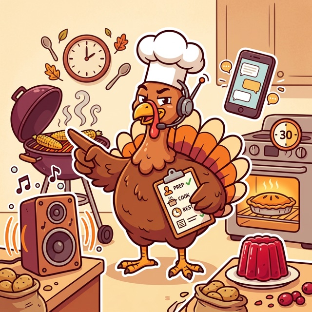

A big dinner is mostly a scheduling problem: two ovens, a grill and a dozen dishes that all have to land at the same moment. This project hands the clock to a few small programs. You plan the dinner; they keep everyone on time.
| 1:40 PM | "Hold up, hold up. It's one forty. Take a little peek at that bacon in oven one. Is it crispy yet, nephew?" | |
| 2:55 PM | "Heads up, nephew. That turkey's hitting the Keg in five minutes. Get ready." | |
| 5:12 PM | "Ayy, cheese time, baby. It's five twelve. Brie into the toaster oven downstairs at three seventy-five, fifteen minutes." | |
| 7:00 PM | "It's seven o'clock, and it's carving time. Carve that turkey." | |
| 7:10 PM | "Heads up, friends. Potatoes and stuffing come out in five minutes." |
A Telegram bot in a group with everyone cooking, connected to a Claude agent that can edit the schedule. Cooks ask it recipe questions or tell it what changed ("mushrooms are here", "push the turkey check 20 minutes"). It rewrites the affected announcements, makes the new clips, restarts the announcer and confirms in one line. Replies stay short: people read them with wet hands.
Every line is written to be heard across a loud kitchen: a fun intro, the time spoken aloud, then one clear instruction with the station and temperature. Gemini text-to-speech reads each line with a style tag and a chosen voice. Because the model sometimes reads the style tag aloud, every clip is transcribed with Whisper and trimmed or regenerated until it's clean. The audio is then loudness-normalised and padded so no syllable gets lost.
A LinkPlay / Up2Stream WiFi streamer takes simple HTTP commands: play this URL as a prompt, read the volume, set the volume. The announcer serves clips from a local web server, turns the volume up for each announcement and back down before it ends, finds the speaker by its network name each time, and falls back to a Sonos if the streamer doesn't answer.
Reads the schedule at startup, waits for each time, plays the clip and posts the text to the group. A restart replays anything from the last two minutes, so don't restart right after an announcement. Muted events go out as text only.
Start from dinner time and work backwards. Map every station and check that no oven needs two temperatures at once. Put the prep in the early hours, add checks and five-minute heads-ups, then turn each step into one spoken line.
events.tsv ──gen_clips.py──▶ clips/HHMM.mp3 (Gemini TTS, checked with Whisper)
│ │
└──────runner.py──────────────┤ at HH:MM
│ ▼
│ LinkPlay speaker (volume boost) ── fallback ──▶ Sonos
▼
Telegram group ◀──▶ kitchen agent (edits events.tsv, regenerates, restarts)
Code, setup and the full how-to are in the repository README.